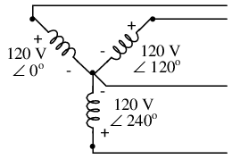
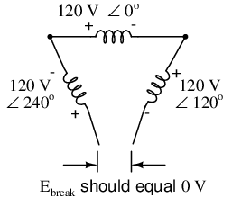

Single phase power system schematic diagram shows little about the wiring of a practical power circuit.
Depicted above (Figure above) is a very simple AC circuit. If the load resistor's power dissipation were substantial, we might call this a “power circuit” or “power system” instead of regarding it as just a regular circuit. The distinction between a “power circuit” and a “regular circuit” may seem arbitrary, but the practical concerns are definitely not.
One such concern is the size and cost of wiring necessary to deliver power from the AC source to the load. Normally, we do not give much thought to this type of concern if we're merely analyzing a circuit for the sake of learning about the laws of electricity. However, in the real world it can be a major concern. If we give the source in the above circuit a voltage value and also give power dissipation values to the two load resistors, we can determine the wiring needs for this particular circuit: (Figure below)
As a practical matter, the wiring for the 20 kW loads at 120 Vac is rather substantial (167 A).
83.33 amps for each load resistor in Figure above adds up to 166.66 amps total circuit current. This is no small amount of current, and would necessitate copper wire conductors of at least 1/0 gage. Such wire is well over 1/4 inch (6 mm) in diameter, weighing over 300 pounds per thousand feet. Bear in mind that copper is not cheap either! It would be in our best interest to find ways to minimize such costs if we were designing a power system with long conductor lengths.
One way to do this would be to increase the voltage of the power source and use loads built to dissipate 10 kW each at this higher voltage. The loads, of course, would have to have greater resistance values to dissipate the same power as before (10 kW each) at a greater voltage than before. The advantage would be less current required, permitting the use of smaller, lighter, and cheaper wire: (Figure below)
Same 10 kW loads at 240 Vac requires less substantial wiring than at 120 Vac (83 A).
Now our total circuit current is 83.33 amps, half of what it was before. We can now use number 4 gage wire, which weighs less than half of what 1/0 gage wire does per unit length. This is a considerable reduction in system cost with no degradation in performance. This is why power distribution system designers elect to transmit electric power using very high voltages (many thousands of volts): to capitalize on the savings realized by the use of smaller, lighter, cheaper wire.
However, this solution is not without disadvantages. Another practical concern with power circuits is the danger of electric shock from high voltages. Again, this is not usually the sort of thing we concentrate on while learning about the laws of electricity, but it is a very valid concern in the real world, especially when large amounts of power are being dealt with. The gain in efficiency realized by stepping up the circuit voltage presents us with increased danger of electric shock. Power distribution companies tackle this problem by stringing their power lines along high poles or towers, and insulating the lines from the supporting structures with large, porcelain insulators.
At the point of use (the electric power customer), there is still the issue of what voltage to use for powering loads. High voltage gives greater system efficiency by means of reduced conductor current, but it might not always be practical to keep power wiring out of reach at the point of use the way it can be elevated out of reach in distribution systems. This tradeoff between efficiency and danger is one that European power system designers have decided to risk, all their households and appliances operating at a nominal voltage of 240 volts instead of 120 volts as it is in North America. That is why tourists from America visiting Europe must carry small step-down transformers for their portable appliances, to step the 240 VAC (volts AC) power down to a more suitable 120 VAC.
Is there any way to realize the advantages of both increased efficiency and reduced safety hazard at the same time? One solution would be to install step-down transformers at the end-point of power use, just as the American tourist must do while in Europe. However, this would be expensive and inconvenient for anything but very small loads (where the transformers can be built cheaply) or very large loads (where the expense of thick copper wires would exceed the expense of a transformer).
An alternative solution would be to use a higher voltage supply to provide power to two lower voltage loads in series. This approach combines the efficiency of a high-voltage system with the safety of a low-voltage system: (Figure below)
Series connected 120 Vac loads, driven by 240 Vac source at 83.3 A total current.
Notice the polarity markings (+ and -) for each voltage shown, as well as the unidirectional arrows for current. For the most part, I've avoided labeling “polarities” in the AC circuits we've been analyzing, even though the notation is valid to provide a frame of reference for phase. In later sections of this chapter, phase relationships will become very important, so I'm introducing this notation early on in the chapter for your familiarity.
The current through each load is the same as it was in the simple 120 volt circuit, but the currents are not additive because the loads are in series rather than parallel. The voltage across each load is only 120 volts, not 240, so the safety factor is better. Mind you, we still have a full 240 volts across the power system wires, but each load is operating at a reduced voltage. If anyone is going to get shocked, the odds are that it will be from coming into contact with the conductors of a particular load rather than from contact across the main wires of a power system.
There's only one disadvantage to this design: the consequences of one load failing open, or being turned off (assuming each load has a series on/off switch to interrupt current) are not good. Being a series circuit, if either load were to open, current would stop in the other load as well. For this reason, we need to modify the design a bit: (Figure below)
Addition of neutral conductor allows loads to be individually driven.
Instead of a single 240 volt power supply, we use two 120 volt supplies (in phase with each other!) in series to produce 240 volts, then run a third wire to the connection point between the loads to handle the eventuality of one load opening. This is called a split-phase power system. Three smaller wires are still cheaper than the two wires needed with the simple parallel design, so we're still ahead on efficiency. The astute observer will note that the neutral wire only has to carry the difference of current between the two loads back to the source. In the above case, with perfectly “balanced” loads consuming equal amounts of power, the neutral wire carries zero current.
Notice how the neutral wire is connected to earth ground at the power supply end. This is a common feature in power systems containing “neutral” wires, since grounding the neutral wire ensures the least possible voltage at any given time between any “hot” wire and earth ground.
An essential component to a split-phase power system is the dual AC voltage source. Fortunately, designing and building one is not difficult. Since most AC systems receive their power from a step-down transformer anyway (stepping voltage down from high distribution levels to a user-level voltage like 120 or 240), that transformer can be built with a center-tapped secondary winding: (Figure below)
American 120/240 Vac power is derived from a center tapped utility transformer.
If the AC power comes directly from a generator (alternator), the coils can be similarly center-tapped for the same effect. The extra expense to include a center-tap connection in a transformer or alternator winding is minimal.
Here is where the (+) and (-) polarity markings really become important. This notation is often used to reference the phasings of multiple AC voltage sources, so it is clear whether they are aiding (“boosting”) each other or opposing (“bucking”) each other. If not for these polarity markings, phase relations between multiple AC sources might be very confusing. Note that the split-phase sources in the schematic (each one 120 volts ∠ 0o), with polarity marks (+) to (-) just like series-aiding batteries can alternatively be represented as such: (Figure below)
Split phase 120/240 Vac source is equivalent to two series aiding 120 Vac sources.
To mathematically calculate voltage between “hot” wires, we must subtract voltages, because their polarity marks show them to be opposed to each other:
If we mark the two sources' common connection point (the neutral wire) with the same polarity mark (-), we must express their relative phase shifts as being 180o apart. Otherwise, we'd be denoting two voltage sources in direct opposition with each other, which would give 0 volts between the two “hot” conductors. Why am I taking the time to elaborate on polarity marks and phase angles? It will make more sense in the next section!
Power systems in American households and light industry are most often of the split-phase variety, providing so-called 120/240 VAC power. The term “split-phase” merely refers to the split-voltage supply in such a system. In a more general sense, this kind of AC power supply is called single phase because both voltage waveforms are in phase, or in step, with each other.
The term “single phase” is a counterpoint to another kind of power system called “polyphase” which we are about to investigate in detail. Apologies for the long introduction leading up to the title-topic of this chapter. The advantages of polyphase power systems are more obvious if one first has a good understanding of single phase systems.
Split-phase power systems achieve their high conductor efficiency and low safety risk by splitting up the total voltage into lesser parts and powering multiple loads at those lesser voltages, while drawing currents at levels typical of a full-voltage system. This technique, by the way, works just as well for DC power systems as it does for single-phase AC systems. Such systems are usually referred to as three-wire systems rather than split-phase because “phase” is a concept restricted to AC.
But we know from our experience with vectors and complex numbers that AC voltages don't always add up as we think they would if they are out of phase with each other. This principle, applied to power systems, can be put to use to make power systems with even greater conductor efficiencies and lower shock hazard than with split-phase.
Suppose that we had two sources of AC voltage connected in series just like the split-phase system we saw before, except that each voltage source was 120o out of phase with the other: (Figure below)

Pair of 120 Vac sources phased 120o, similar to split-phase.
Since each voltage source is 120 volts, and each load resistor is connected directly in parallel with its respective source, the voltage across each load must be 120 volts as well. Given load currents of 83.33 amps, each load must still be dissipating 10 kilowatts of power. However, voltage between the two “hot” wires is not 240 volts (120 ∠ 0o - 120 ∠ 180o) because the phase difference between the two sources is not 180o. Instead, the voltage is:
Nominally, we say that the voltage between “hot” conductors is 208 volts (rounding up), and thus the power system voltage is designated as 120/208.
If we calculate the current through the “neutral” conductor, we find that it is not zero, even with balanced load resistances. Kirchhoff's Current Law tells us that the currents entering and exiting the node between the two loads must be zero: (Figure below)
Neutral wire carries a current in the case of a pair of 120o phased sources.
So, we find that the “neutral” wire is carrying a full 83.33 amps, just like each “hot” wire.
Note that we are still conveying 20 kW of total power to the two loads, with each load's “hot” wire carrying 83.33 amps as before. With the same amount of current through each “hot” wire, we must use the same gage copper conductors, so we haven't reduced system cost over the split-phase 120/240 system. However, we have realized a gain in safety, because the overall voltage between the two “hot” conductors is 32 volts lower than it was in the split-phase system (208 volts instead of 240 volts).
The fact that the neutral wire is carrying 83.33 amps of current raises an interesting possibility: since its carrying current anyway, why not use that third wire as another “hot” conductor, powering another load resistor with a third 120 volt source having a phase angle of 240o? That way, we could transmit more power (another 10 kW) without having to add any more conductors. Let's see how this might look: (Figure below)
With a third load phased 120o to the other two, the currents are the same as for two loads.
A full mathematical analysis of all the voltages and currents in this circuit would necessitate the use of a network theorem, the easiest being the Superposition Theorem. I'll spare you the long, drawn-out calculations because you should be able to intuitively understand that the three voltage sources at three different phase angles will deliver 120 volts each to a balanced triad of load resistors. For proof of this, we can use SPICE to do the math for us: (Figure below, SPICE listing: 120/208 polyphase power system)
SPICE circuit: Three 3-Φ loads phased at 120o.
120/208 polyphase power system v1 1 0 ac 120 0 sin v2 2 0 ac 120 120 sin v3 3 0 ac 120 240 sin r1 1 4 1.44 r2 2 4 1.44 r3 3 4 1.44 .ac lin 1 60 60 .print ac v(1,4) v(2,4) v(3,4) .print ac v(1,2) v(2,3) v(3,1) .print ac i(v1) i(v2) i(v3) .end
VOLTAGE ACROSS EACH LOAD freq v(1,4) v(2,4) v(3,4) 6.000E+01 1.200E+02 1.200E+02 1.200E+02 VOLTAGE BETWEEN “HOT” CONDUCTORS freq v(1,2) v(2,3) v(3,1) 6.000E+01 2.078E+02 2.078E+02 2.078E+02 CURRENT THROUGH EACH VOLTAGE SOURCE freq i(v1) i(v2) i(v3) 6.000E+01 8.333E+01 8.333E+01 8.333E+01
Sure enough, we get 120 volts across each load resistor, with (approximately) 208 volts between any two “hot” conductors and conductor currents equal to 83.33 amps. (Figure below) At that current and voltage, each load will be dissipating 10 kW of power. Notice that this circuit has no “neutral” conductor to ensure stable voltage to all loads if one should open. What we have here is a situation similar to our split-phase power circuit with no “neutral” conductor: if one load should happen to fail open, the voltage drops across the remaining load(s) will change. To ensure load voltage stability in the event of another load opening, we need a neutral wire to connect the source node and load node together:
SPICE circuit annotated with simulation results: Three 3-Φ loads phased at 120o.
So long as the loads remain balanced (equal resistance, equal currents), the neutral wire will not have to carry any current at all. It is there just in case one or more load resistors should fail open (or be shut off through a disconnecting switch).
This circuit we've been analyzing with three voltage sources is called a polyphase circuit. The prefix “poly” simply means “more than one,” as in “polytheism” (belief in more than one deity), “polygon” (a geometrical shape made of multiple line segments: for example, pentagon and hexagon), and “polyatomic” (a substance composed of multiple types of atoms). Since the voltage sources are all at different phase angles (in this case, three different phase angles), this is a “polyphase” circuit. More specifically, it is a three-phase circuit, the kind used predominantly in large power distribution systems.
Let's survey the advantages of a three-phase power system over a single-phase system of equivalent load voltage and power capacity. A single-phase system with three loads connected directly in parallel would have a very high total current (83.33 times 3, or 250 amps. (Figure below)
For comparison, three 10 Kw loads on a 120 Vac system draw 250 A.
This would necessitate 3/0 gage copper wire (very large!), at about 510 pounds per thousand feet, and with a considerable price tag attached. If the distance from source to load was 1000 feet, we would need over a half-ton of copper wire to do the job. On the other hand, we could build a split-phase system with two 15 kW, 120 volt loads. (Figure below)
Split phase system draws half the current of 125 A at 240 Vac compared to 120 Vac system.
Our current is half of what it was with the simple parallel circuit, which is a great improvement. We could get away with using number 2 gage copper wire at a total mass of about 600 pounds, figuring about 200 pounds per thousand feet with three runs of 1000 feet each between source and loads. However, we also have to consider the increased safety hazard of having 240 volts present in the system, even though each load only receives 120 volts. Overall, there is greater potential for dangerous electric shock to occur.
When we contrast these two examples against our three-phase system (Figure above), the advantages are quite clear. First, the conductor currents are quite a bit less (83.33 amps versus 125 or 250 amps), permitting the use of much thinner and lighter wire. We can use number 4 gage wire at about 125 pounds per thousand feet, which will total 500 pounds (four runs of 1000 feet each) for our example circuit. This represents a significant cost savings over the split-phase system, with the additional benefit that the maximum voltage in the system is lower (208 versus 240).
One question remains to be answered: how in the world do we get three AC voltage sources whose phase angles are exactly 120o apart? Obviously we can't center-tap a transformer or alternator winding like we did in the split-phase system, since that can only give us voltage waveforms that are either in phase or 180o out of phase. Perhaps we could figure out some way to use capacitors and inductors to create phase shifts of 120o, but then those phase shifts would depend on the phase angles of our load impedances as well (substituting a capacitive or inductive load for a resistive load would change everything!).
The best way to get the phase shifts we're looking for is to generate it at the source: construct the AC generator (alternator) providing the power in such a way that the rotating magnetic field passes by three sets of wire windings, each set spaced 120o apart around the circumference of the machine as in Figure below.
(a) Single-phase alternator, (b) Three-phase alternator.
Together, the six “pole” windings of a three-phase alternator are connected to comprise three winding pairs, each pair producing AC voltage with a phase angle 120o shifted from either of the other two winding pairs. The interconnections between pairs of windings (as shown for the single-phase alternator: the jumper wire between windings 1a and 1b) have been omitted from the three-phase alternator drawing for simplicity.
In our example circuit, we showed the three voltage sources connected together in a “Y” configuration (sometimes called the “star” configuration), with one lead of each source tied to a common point (the node where we attached the “neutral” conductor). The common way to depict this connection scheme is to draw the windings in the shape of a “Y” like Figure below.

Alternator "Y" configuration.
The “Y” configuration is not the only option open to us, but it is probably the easiest to understand at first. More to come on this subject later in the chapter.
Let's take the three-phase alternator design laid out earlier (Figure below) and watch what happens as the magnet rotates.

Three-phase alternator
The phase angle shift of 120o is a function of the actual rotational angle shift of the three pairs of windings (Figure below). If the magnet is rotating clockwise, winding 3 will generate its peak instantaneous voltage exactly 120o (of alternator shaft rotation) after winding 2, which will hits its peak 120o after winding 1. The magnet passes by each pole pair at different positions in the rotational movement of the shaft. Where we decide to place the windings will dictate the amount of phase shift between the windings' AC voltage waveforms. If we make winding 1 our “reference” voltage source for phase angle (0o), then winding 2 will have a phase angle of -120o (120o lagging, or 240o leading) and winding 3 an angle of -240o (or 120o leading).
This sequence of phase shifts has a definite order. For clockwise rotation of the shaft, the order is 1-2-3 (winding 1 peaks first, them winding 2, then winding 3). This order keeps repeating itself as long as we continue to rotate the alternator's shaft. (Figure below)
Clockwise rotation phase sequence: 1-2-3.
However, if we reverse the rotation of the alternator's shaft (turn it counter-clockwise), the magnet will pass by the pole pairs in the opposite sequence. Instead of 1-2-3, we'll have 3-2-1. Now, winding 2's waveform will be leading 120o ahead of 1 instead of lagging, and 3 will be another 120o ahead of 2. (Figure below)
Counterclockwise rotation phase sequence: 3-2-1.
The order of voltage waveform sequences in a polyphase system is called phase rotation or phase sequence. If we're using a polyphase voltage source to power resistive loads, phase rotation will make no difference at all. Whether 1-2-3 or 3-2-1, the voltage and current magnitudes will all be the same. There are some applications of three-phase power, as we will see shortly, that depend on having phase rotation being one way or the other. Since voltmeters and ammeters would be useless in telling us what the phase rotation of an operating power system is, we need to have some other kind of instrument capable of doing the job.
One ingenious circuit design uses a capacitor to introduce a phase shift between voltage and current, which is then used to detect the sequence by way of comparison between the brightness of two indicator lamps in Figure below.
Phase sequence detector compares brightness of two lamps.
The two lamps are of equal filament resistance and wattage. The capacitor is sized to have approximately the same amount of reactance at system frequency as each lamp's resistance. If the capacitor were to be replaced by a resistor of equal value to the lamps' resistance, the two lamps would glow at equal brightness, the circuit being balanced. However, the capacitor introduces a phase shift between voltage and current in the third leg of the circuit equal to 90o. This phase shift, greater than 0o but less than 120o, skews the voltage and current values across the two lamps according to their phase shifts relative to phase 3. The following SPICE analysis demonstrates what will happen: (Figure below), "phase rotation detector -- sequence = v1-v2-v3"
SPICE circuit for phase sequence detector.
phase rotation detector -- sequence = v1-v2-v3 v1 1 0 ac 120 0 sin v2 2 0 ac 120 120 sin v3 3 0 ac 120 240 sin r1 1 4 2650 r2 2 4 2650 c1 3 4 1u .ac lin 1 60 60 .print ac v(1,4) v(2,4) v(3,4) .end freq v(1,4) v(2,4) v(3,4) 6.000E+01 4.810E+01 1.795E+02 1.610E+02
The resulting phase shift from the capacitor causes the voltage across phase 1 lamp (between nodes 1 and 4) to fall to 48.1 volts and the voltage across phase 2 lamp (between nodes 2 and 4) to rise to 179.5 volts, making the first lamp dim and the second lamp bright. Just the opposite will happen if the phase sequence is reversed: "phase rotation detector -- sequence = v3-v2-v1 "
phase rotation detector -- sequence = v3-v2-v1 v1 1 0 ac 120 240 sin v2 2 0 ac 120 120 sin v3 3 0 ac 120 0 sin r1 1 4 2650 r2 2 4 2650 c1 3 4 1u .ac lin 1 60 60 .print ac v(1,4) v(2,4) v(3,4) .end freq v(1,4) v(2,4) v(3,4) 6.000E+01 1.795E+02 4.810E+01 1.610E+02
Here,("phase rotation detector -- sequence = v3-v2-v1") the first lamp receives 179.5 volts while the second receives only 48.1 volts.
We've investigated how phase rotation is produced (the order in which pole pairs get passed by the alternator's rotating magnet) and how it can be changed by reversing the alternator's shaft rotation. However, reversal of the alternator's shaft rotation is not usually an option open to an end-user of electrical power supplied by a nationwide grid (“the” alternator actually being the combined total of all alternators in all power plants feeding the grid). There is a much easier way to reverse phase sequence than reversing alternator rotation: just exchange any two of the three “hot” wires going to a three-phase load.
This trick makes more sense if we take another look at a running phase sequence of a three-phase voltage source:
1-2-3 rotation: 1-2-3-1-2-3-1-2-3-1-2-3-1-2-3 . . . 3-2-1 rotation: 3-2-1-3-2-1-3-2-1-3-2-1-3-2-1 . . .
What is commonly designated as a “1-2-3” phase rotation could just as well be called “2-3-1” or “3-1-2,” going from left to right in the number string above. Likewise, the opposite rotation (3-2-1) could just as easily be called “2-1-3” or “1-3-2.”
Starting out with a phase rotation of 3-2-1, we can try all the possibilities for swapping any two of the wires at a time and see what happens to the resulting sequence in Figure below.
All possibilities of swapping any two wires.
No matter which pair of “hot” wires out of the three we choose to swap, the phase rotation ends up being reversed (1-2-3 gets changed to 2-1-3, 1-3-2 or 3-2-1, all equivalent).
Perhaps the most important benefit of polyphase AC power over single-phase is the design and operation of AC motors. As we studied in the first chapter of this book, some types of AC motors are virtually identical in construction to their alternator (generator) counterparts, consisting of stationary wire windings and a rotating magnet assembly. (Other AC motor designs are not quite this simple, but we will leave those details to another lesson).
Clockwise AC motor operation.
If the rotating magnet is able to keep up with the frequency of the alternating current energizing the electromagnet windings (coils), it will continue to be pulled around clockwise. (Figure above) However, clockwise is not the only valid direction for this motor's shaft to spin. It could just as easily be powered in a counter-clockwise direction by the same AC voltage waveform a in Figure below.
Counterclockwise AC motor operation.
Notice that with the exact same sequence of polarity cycles (voltage, current, and magnetic poles produced by the coils), the magnetic rotor can spin in either direction. This is a common trait of all single-phase AC “induction” and “synchronous” motors: they have no normal or “correct” direction of rotation. The natural question should arise at this point: how can the motor get started in the intended direction if it can run either way just as well? The answer is that these motors need a little help getting started. Once helped to spin in a particular direction. they will continue to spin that way as long as AC power is maintained to the windings.
Where that “help” comes from for a single-phase AC motor to get going in one direction can vary. Usually, it comes from an additional set of windings positioned differently from the main set, and energized with an AC voltage that is out of phase with the main power. (Figure below)
Unidirectional-starting AC two-phase motor.
These supplementary coils are typically connected in series with a capacitor to introduce a phase shift in current between the two sets of windings. (Figure below)
Capacitor phase shift adds second phase.
That phase shift creates magnetic fields from coils 2a and 2b that are equally out of step with the fields from coils 1a and 1b. The result is a set of magnetic fields with a definite phase rotation. It is this phase rotation that pulls the rotating magnet around in a definite direction.
Polyphase AC motors require no such trickery to spin in a definite direction. Because their supply voltage waveforms already have a definite rotation sequence, so do the respective magnetic fields generated by the motor's stationary windings. In fact, the combination of all three phase winding sets working together creates what is often called a rotating magnetic field. It was this concept of a rotating magnetic field that inspired Nikola Tesla to design the world's first polyphase electrical systems (simply to make simpler, more efficient motors). The line current and safety advantages of polyphase power over single phase power were discovered later.
What can be a confusing concept is made much clearer through analogy. Have you ever seen a row of blinking light bulbs such as the kind used in Christmas decorations? Some strings appear to “move” in a definite direction as the bulbs alternately glow and darken in sequence. Other strings just blink on and off with no apparent motion. What makes the difference between the two types of bulb strings? Answer: phase shift!
Examine a string of lights where every other bulb is lit at any given time as in (Figure below)
Phase sequence 1-2-1-2: lamps appear to move.
When all of the “1” bulbs are lit, the “2” bulbs are dark, and vice versa. With this blinking sequence, there is no definite “motion” to the bulbs' light. Your eyes could follow a “motion” from left to right just as easily as from right to left. Technically, the “1” and “2” bulb blinking sequences are 180o out of phase (exactly opposite each other). This is analogous to the single-phase AC motor, which can run just as easily in either direction, but which cannot start on its own because its magnetic field alternation lacks a definite “rotation.”
Now let's examine a string of lights where there are three sets of bulbs to be sequenced instead of just two, and these three sets are equally out of phase with each other in Figure below.
Phase sequence: 1-2-3: bulbs appear to move left to right.
If the lighting sequence is 1-2-3 (the sequence shown in (Figure above)), the bulbs will appear to “move” from left to right. Now imagine this blinking string of bulbs arranged into a circle as in Figure below.
Circular arrangement; bulbs appear to rotate clockwise.
Now the lights in Figure above appear to be “moving” in a clockwise direction because they are arranged around a circle instead of a straight line. It should come as no surprise that the appearance of motion will reverse if the phase sequence of the bulbs is reversed.
The blinking pattern will either appear to move clockwise or counter-clockwise depending on the phase sequence. This is analogous to a three-phase AC motor with three sets of windings energized by voltage sources of three different phase shifts in Figure below.
Three-phase AC motor: A phase sequence of 1-2-3 spins the magnet clockwise, 3-2-1 spins the magnet counterclockwise.
With phase shifts of less than 180o we get true rotation of the magnetic field. With single-phase motors, the rotating magnetic field necessary for self-starting must to be created by way of capacitive phase shift. With polyphase motors, the necessary phase shifts are there already. Plus, the direction of shaft rotation for polyphase motors is very easily reversed: just swap any two “hot” wires going to the motor, and it will run in the opposite direction!
Initially we explored the idea of three-phase power systems by connecting three voltage sources together in what is commonly known as the “Y” (or “star”) configuration. This configuration of voltage sources is characterized by a common connection point joining one side of each source. (Figure below)
Three-phase “Y” connection has three voltage sources connected to a common point.
If we draw a circuit showing each voltage source to be a coil of wire (alternator or transformer winding) and do some slight rearranging, the “Y” configuration becomes more obvious in Figure below.
Three-phase, four-wire “Y” connection uses a "common" fourth wire.
The three conductors leading away from the voltage sources (windings) toward a load are typically called lines, while the windings themselves are typically called phases. In a Y-connected system, there may or may not (Figure below) be a neutral wire attached at the junction point in the middle, although it certainly helps alleviate potential problems should one element of a three-phase load fail open, as discussed earlier.
Three-phase, three-wire “Y” connection does not use the neutral wire.
When we measure voltage and current in three-phase systems, we need to be specific as to where we're measuring. Line voltage refers to the amount of voltage measured between any two line conductors in a balanced three-phase system. With the above circuit, the line voltage is roughly 208 volts. Phase voltage refers to the voltage measured across any one component (source winding or load impedance) in a balanced three-phase source or load. For the circuit shown above, the phase voltage is 120 volts. The terms line current and phase current follow the same logic: the former referring to current through any one line conductor, and the latter to current through any one component.
Y-connected sources and loads always have line voltages greater than phase voltages, and line currents equal to phase currents. If the Y-connected source or load is balanced, the line voltage will be equal to the phase voltage times the square root of 3:
However, the “Y” configuration is not the only valid one for connecting three-phase voltage source or load elements together. Another configuration is known as the “Delta,” for its geometric resemblance to the Greek letter of the same name (Δ). Take close notice of the polarity for each winding in Figure below.
Three-phase, three-wire Δ connection has no common.
At first glance it seems as though three voltage sources like this would create a short-circuit, electrons flowing around the triangle with nothing but the internal impedance of the windings to hold them back. Due to the phase angles of these three voltage sources, however, this is not the case.
One quick check of this is to use Kirchhoff's Voltage Law to see if the three voltages around the loop add up to zero. If they do, then there will be no voltage available to push current around and around that loop, and consequently there will be no circulating current. Starting with the top winding and progressing counter-clockwise, our KVL expression looks something like this:
Indeed, if we add these three vector quantities together, they do add up to zero. Another way to verify the fact that these three voltage sources can be connected together in a loop without resulting in circulating currents is to open up the loop at one junction point and calculate voltage across the break: (Figure below)

Voltage across open Δ should be zero.
Starting with the right winding (120 V ∠ 120o) and progressing counter-clockwise, our KVL equation looks like this:
Sure enough, there will be zero voltage across the break, telling us that no current will circulate within the triangular loop of windings when that connection is made complete.
Having established that a Δ-connected three-phase voltage source will not burn itself to a crisp due to circulating currents, we turn to its practical use as a source of power in three-phase circuits. Because each pair of line conductors is connected directly across a single winding in a Δ circuit, the line voltage will be equal to the phase voltage. Conversely, because each line conductor attaches at a node between two windings, the line current will be the vector sum of the two joining phase currents. Not surprisingly, the resulting equations for a Δ configuration are as follows:
Let's see how this works in an example circuit: (Figure below)
The load on the Δ source is wired in a Δ.
With each load resistance receiving 120 volts from its respective phase winding at the source, the current in each phase of this circuit will be 83.33 amps:
So each line current in this three-phase power system is equal to 144.34 amps, which is substantially more than the line currents in the Y-connected system we looked at earlier. One might wonder if we've lost all the advantages of three-phase power here, given the fact that we have such greater conductor currents, necessitating thicker, more costly wire. The answer is no. Although this circuit would require three number 1 gage copper conductors (at 1000 feet of distance between source and load this equates to a little over 750 pounds of copper for the whole system), it is still less than the 1000+ pounds of copper required for a single-phase system delivering the same power (30 kW) at the same voltage (120 volts conductor-to-conductor).
One distinct advantage of a Δ-connected system is its lack of a neutral wire. With a Y-connected system, a neutral wire was needed in case one of the phase loads were to fail open (or be turned off), in order to keep the phase voltages at the load from changing. This is not necessary (or even possible!) in a Δ-connected circuit. With each load phase element directly connected across a respective source phase winding, the phase voltage will be constant regardless of open failures in the load elements.
Perhaps the greatest advantage of the Δ-connected source is its fault tolerance. It is possible for one of the windings in a Δ-connected three-phase source to fail open (Figure below) without affecting load voltage or current!
Even with a source winding failure, the line voltage is still 120 V, and load phase voltage is still 120 V. The only difference is extra current in the remaining functional source windings.
The only consequence of a source winding failing open for a Δ-connected source is increased phase current in the remaining windings. Compare this fault tolerance with a Y-connected system suffering an open source winding in Figure below.
Open “Y” source winding halves the voltage on two loads of a Δ connected load.
With a Δ-connected load, two of the resistances suffer reduced voltage while one remains at the original line voltage, 208. A Y-connected load suffers an even worse fate (Figure below) with the same winding failure in a Y-connected source
Open source winding of a "Y-Y" system halves the voltage on two loads, and looses one load entirely.
In this case, two load resistances suffer reduced voltage while the third loses supply voltage completely! For this reason, Δ-connected sources are preferred for reliability. However, if dual voltages are needed (e.g. 120/208) or preferred for lower line currents, Y-connected systems are the configuration of choice.
Since three-phase is used so often for power distribution systems, it makes sense that we would need three-phase transformers to be able to step voltages up or down. This is only partially true, as regular single-phase transformers can be ganged together to transform power between two three-phase systems in a variety of configurations, eliminating the requirement for a special three-phase transformer. However, special three-phase transformers are built for those tasks, and are able to perform with less material requirement, less size, and less weight than their modular counterparts.
A three-phase transformer is made of three sets of primary and secondary windings, each set wound around one leg of an iron core assembly. Essentially it looks like three single-phase transformers sharing a joined core as in Figure below.
Three phase transformer core has three sets of windings.
Those sets of primary and secondary windings will be connected in either Δ or Y configurations to form a complete unit. The various combinations of ways that these windings can be connected together in will be the focus of this section.
Whether the winding sets share a common core assembly or each winding pair is a separate transformer, the winding connection options are the same:
The reasons for choosing a Y or Δ configuration for transformer winding connections are the same as for any other three-phase application: Y connections provide the opportunity for multiple voltages, while Δ connections enjoy a higher level of reliability (if one winding fails open, the other two can still maintain full line voltages to the load).
Probably the most important aspect of connecting three sets of primary and secondary windings together to form a three-phase transformer bank is paying attention to proper winding phasing (the dots used to denote “polarity” of windings). Remember the proper phase relationships between the phase windings of Δ and Y: (Figure below)
(Y) The center point of the “Y” must tie either all the “-” or all the “+” winding points together. (Δ) The winding polarities must stack together in a complementary manner ( + to -).
Getting this phasing correct when the windings aren't shown in regular Y or Δ configuration can be tricky. Let me illustrate, starting with Figure below.
Inputs A1, B1, C1 may be wired either “Δ” or “Y”, as may outputs A2, B2, C2.
Three individual transformers are to be connected together to transform power from one three-phase system to another. First, I'll show the wiring connections for a Y-Y configuration: Figure below
Phase wiring for “Y-Y” transformer.
Note in Figure above how all the winding ends marked with dots are connected to their respective phases A, B, and C, while the non-dot ends are connected together to form the centers of each “Y”. Having both primary and secondary winding sets connected in “Y” formations allows for the use of neutral conductors (N1 and N2) in each power system.
Now, we'll take a look at a Y-Δ configuration: (Figure below)
Phase wiring for “Y-Δ” transformer.
Note how the secondary windings (bottom set, Figure above) are connected in a chain, the “dot” side of one winding connected to the “non-dot” side of the next, forming the Δ loop. At every connection point between pairs of windings, a connection is made to a line of the second power system (A, B, and C).
Now, let's examine a Δ-Y system in Figure below.
Phase wiring for “Δ-Y” transformer.
Such a configuration (Figure above) would allow for the provision of multiple voltages (line-to-line or line-to-neutral) in the second power system, from a source power system having no neutral.
And finally, we turn to the Δ-Δ configuration: (Figure below)
Phase wiring for “Δ-Δ” transformer.
When there is no need for a neutral conductor in the secondary power system, Δ-Δ connection schemes (Figure above) are preferred because of the inherent reliability of the Δ configuration.
Considering that a Δ configuration can operate satisfactorily missing one winding, some power system designers choose to create a three-phase transformer bank with only two transformers, representing a Δ-Δ configuration with a missing winding in both the primary and secondary sides: (Figure below)

“V” or “open-Δ” provides 2-φ power with only two transformers.
This configuration is called “V” or “Open-Δ.” Of course, each of the two transformers have to be oversized to handle the same amount of power as three in a standard Δ configuration, but the overall size, weight, and cost advantages are often worth it. Bear in mind, however, that with one winding set missing from the Δ shape, this system no longer provides the fault tolerance of a normal Δ-Δ system. If one of the two transformers were to fail, the load voltage and current would definitely be affected.
The following photograph (Figure below) shows a bank of step-up transformers at the Grand Coulee hydroelectric dam in Washington state. Several transformers (green in color) may be seen from this vantage point, and they are grouped in threes: three transformers per hydroelectric generator, wired together in some form of three-phase configuration. The photograph doesn't reveal the primary winding connections, but it appears the secondaries are connected in a Y configuration, being that there is only one large high-voltage insulator protruding from each transformer. This suggests the other side of each transformer's secondary winding is at or near ground potential, which could only be true in a Y system. The building to the left is the powerhouse, where the generators and turbines are housed. On the right, the sloping concrete wall is the downstream face of the dam:
Step-up transfromer bank at Grand Coulee hydroelectric dam, Washington state, USA.
In the chapter on mixed-frequency signals, we explored the concept of harmonics in AC systems: frequencies that are integer multiples of the fundamental source frequency. With AC power systems where the source voltage waveform coming from an AC generator (alternator) is supposed to be a single-frequency sine wave, undistorted, there should be no harmonic content . . . ideally.
This would be true were it not for nonlinear components. Nonlinear components draw current disproportionately with respect to the source voltage, causing non-sinusoidal current waveforms. Examples of nonlinear components include gas-discharge lamps, semiconductor power-control devices (diodes, transistors, SCRs, TRIACs), transformers (primary winding magnetization current is usually non-sinusoidal due to the B/H saturation curve of the core), and electric motors (again, when magnetic fields within the motor's core operate near saturation levels). Even incandescent lamps generate slightly nonsinusoidal currents, as the filament resistance changes throughout the cycle due to rapid fluctuations in temperature. As we learned in the mixed-frequency chapter, any distortion of an otherwise sine-wave shaped waveform constitutes the presence of harmonic frequencies.
When the nonsinusoidal waveform in question is symmetrical above and below its average centerline, the harmonic frequencies will be odd integer multiples of the fundamental source frequency only, with no even integer multiples. (Figure below) Most nonlinear loads produce current waveforms like this, and so even-numbered harmonics (2nd, 4th, 6th, 8th, 10th, 12th, etc.) are absent or only minimally present in most AC power systems.
Examples of symmetrical waveforms -- odd harmonics only.
Examples of nonsymmetrical waveforms with even harmonics present are shown for reference in Figure below.
Examples of nonsymmetrical waveforms -- even harmonics present.
Even though half of the possible harmonic frequencies are eliminated by the typically symmetrical distortion of nonlinear loads, the odd harmonics can still cause problems. Some of these problems are general to all power systems, single-phase or otherwise. Transformer overheating due to eddy current losses, for example, can occur in any AC power system where there is significant harmonic content. However, there are some problems caused by harmonic currents that are specific to polyphase power systems, and it is these problems to which this section is specifically devoted.
It is helpful to be able to simulate nonlinear loads in SPICE so as to avoid a lot of complex mathematics and obtain a more intuitive understanding of harmonic effects. First, we'll begin our simulation with a very simple AC circuit: a single sine-wave voltage source with a purely linear load and all associated resistances: (Figure below)
SPICE circuit with single sine-wave source.
The Rsource and Rline resistances in this circuit do more than just mimic the real world: they also provide convenient shunt resistances for measuring currents in the SPICE simulation: by reading voltage across a 1 Ω resistance, you obtain a direct indication of current through it, since E = IR.
A SPICE simulation of this circuit (SPICE listing: “linear load simulation”) with Fourier analysis on the voltage measured across Rline should show us the harmonic content of this circuit's line current. Being completely linear in nature, we should expect no harmonics other than the 1st (fundamental) of 60 Hz, assuming a 60 Hz source. See SPICE output “Fourier components of transient response v(2,3)” and Figure below.
linear load simulation vsource 1 0 sin(0 120 60 0 0) rsource 1 2 1 rline 2 3 1 rload 3 0 1k .options itl5=0 .tran 0.5m 30m 0 1u .plot tran v(2,3) .four 60 v(2,3) .end
Fourier components of transient response v(2,3) dc component = 4.028E-12 harmonic frequency Fourier normalized phase normalized no (hz) component component (deg) phase (deg) 1 6.000E+01 1.198E-01 1.000000 -72.000 0.000 2 1.200E+02 5.793E-12 0.000000 51.122 123.122 3 1.800E+02 7.407E-12 0.000000 -34.624 37.376 4 2.400E+02 9.056E-12 0.000000 4.267 76.267 5 3.000E+02 1.651E-11 0.000000 -83.461 -11.461 6 3.600E+02 3.931E-11 0.000000 36.399 108.399 7 4.200E+02 2.338E-11 0.000000 -41.343 30.657 8 4.800E+02 4.716E-11 0.000000 53.324 125.324 9 5.400E+02 3.453E-11 0.000000 21.691 93.691 total harmonic distortion = 0.000000 percent
Frequency domain plot of single frequency component. See SPICE listing: “linear load simulation”.
A .plot command appears in the SPICE netlist, and normally this would result in a sine-wave graph output. In this case, however, I've purposely omitted the waveform display for brevity's sake -- the .plot command is in the netlist simply to satisfy a quirk of SPICE's Fourier transform function.
No discrete Fourier transform is perfect, and so we see very small harmonic currents indicated (in the pico-amp range!) for all frequencies up to the 9th harmonic (in the table ), which is as far as SPICE goes in performing Fourier analysis. We show 0.1198 amps (1.198E-01) for the “Fourier component” of the 1st harmonic, or the fundamental frequency, which is our expected load current: about 120 mA, given a source voltage of 120 volts and a load resistance of 1 kΩ.
Next, I'd like to simulate a nonlinear load so as to generate harmonic currents. This can be done in two fundamentally different ways. One way is to design a load using nonlinear components such as diodes or other semiconductor devices which are easy to simulate with SPICE. Another is to add some AC current sources in parallel with the load resistor. The latter method is often preferred by engineers for simulating harmonics, since current sources of known value lend themselves better to mathematical network analysis than components with highly complex response characteristics. Since we're letting SPICE do all the math work, the complexity of a semiconductor component would cause no trouble for us, but since current sources can be fine-tuned to produce any arbitrary amount of current (a convenient feature), I'll choose the latter approach shown in Figure below and SPICE listing: “Nonlinear load simulation”.
SPICE circuit: 60 Hz source with 3rd harmonic added.
Nonlinear load simulation vsource 1 0 sin(0 120 60 0 0) rsource 1 2 1 rline 2 3 1 rload 3 0 1k i3har 3 0 sin(0 50m 180 0 0) .options itl5=0 .tran 0.5m 30m 0 1u .plot tran v(2,3) .four 60 v(2,3) .end
In this circuit, we have a current source of 50 mA magnitude and a frequency of 180 Hz, which is three times the source frequency of 60 Hz. Connected in parallel with the 1 kΩ load resistor, its current will add with the resistor's to make a nonsinusoidal total line current. I'll show the waveform plot in Figure below just so you can see the effects of this 3rd-harmonic current on the total current, which would ordinarily be a plain sine wave.
SPICE time-domain plot showing sum of 60 Hz source and 3rd harmonic of 180 Hz.
Fourier components of transient response v(2,3) dc component = 1.349E-11 harmonic frequency Fourier normalized phase normalized no (hz) component component (deg) phase (deg) 1 6.000E+01 1.198E-01 1.000000 -72.000 0.000 2 1.200E+02 1.609E-11 0.000000 67.570 139.570 3 1.800E+02 4.990E-02 0.416667 144.000 216.000 4 2.400E+02 1.074E-10 0.000000 -169.546 -97.546 5 3.000E+02 3.871E-11 0.000000 169.582 241.582 6 3.600E+02 5.736E-11 0.000000 140.845 212.845 7 4.200E+02 8.407E-11 0.000000 177.071 249.071 8 4.800E+02 1.329E-10 0.000000 156.772 228.772 9 5.400E+02 2.619E-10 0.000000 160.498 232.498 total harmonic distortion = 41.666663 percent
SPICE Fourier plot showing 60 Hz source and 3rd harmonic of 180 Hz.
In the Fourier analysis, (See Figure above and “Fourier components of transient response v(2,3)”) the mixed frequencies are unmixed and presented separately. Here we see the same 0.1198 amps of 60 Hz (fundamental) current as we did in the first simulation, but appearing in the 3rd harmonic row we see 49.9 mA: our 50 mA, 180 Hz current source at work. Why don't we see the entire 50 mA through the line? Because that current source is connected across the 1 kΩ load resistor, so some of its current is shunted through the load and never goes through the line back to the source. It's an inevitable consequence of this type of simulation, where one part of the load is “normal” (a resistor) and the other part is imitated by a current source.
If we were to add more current sources to the “load,” we would see further distortion of the line current waveform from the ideal sine-wave shape, and each of those harmonic currents would appear in the Fourier analysis breakdown. See Figure below and SPICE listing: “Nonlinear load simulation”.
Nonlinear load: 1st, 3rd, 5th, 7th, and 9th harmonics present.
Nonlinear load simulation vsource 1 0 sin(0 120 60 0 0) rsource 1 2 1 rline 2 3 1 rload 3 0 1k i3har 3 0 sin(0 50m 180 0 0) i5har 3 0 sin(0 50m 300 0 0) i7har 3 0 sin(0 50m 420 0 0) i9har 3 0 sin(0 50m 540 0 0) .options itl5=0 .tran 0.5m 30m 0 1u .plot tran v(2,3) .four 60 v(2,3) .end
Fourier components of transient response v(2,3) dc component = 6.299E-11 harmonic frequency Fourier normalized phase normalized no (hz) component component (deg) phase (deg) 1 6.000E+01 1.198E-01 1.000000 -72.000 0.000 2 1.200E+02 1.900E-09 0.000000 -93.908 -21.908 3 1.800E+02 4.990E-02 0.416667 144.000 216.000 4 2.400E+02 5.469E-09 0.000000 -116.873 -44.873 5 3.000E+02 4.990E-02 0.416667 0.000 72.000 6 3.600E+02 6.271E-09 0.000000 85.062 157.062 7 4.200E+02 4.990E-02 0.416666 -144.000 -72.000 8 4.800E+02 2.742E-09 0.000000 -38.781 33.219 9 5.400E+02 4.990E-02 0.416666 72.000 144.000 total harmonic distortion = 83.333296 percent
Fourier analysis: “Fourier components of transient response v(2,3)”.
As you can see from the Fourier analysis, (Figure above) every harmonic current source is equally represented in the line current, at 49.9 mA each. So far, this is just a single-phase power system simulation. Things get more interesting when we make it a three-phase simulation. Two Fourier analyses will be performed: one for the voltage across a line resistor, and one for the voltage across the neutral resistor. As before, reading voltages across fixed resistances of 1 Ω each gives direct indications of current through those resistors. See Figure below and SPICE listing “Y-Y source/load 4-wire system with harmonics”.
SPICE circuit: analysis of “line current” and “neutral current”, Y-Y source/load 4-wire system with harmonics.
Y-Y source/load 4-wire system with harmonics * * phase1 voltage source and r (120 v /_ 0 deg) vsource1 1 0 sin(0 120 60 0 0) rsource1 1 2 1 * * phase2 voltage source and r (120 v /_ 120 deg) vsource2 3 0 sin(0 120 60 5.55555m 0) rsource2 3 4 1 * * phase3 voltage source and r (120 v /_ 240 deg) vsource3 5 0 sin(0 120 60 11.1111m 0) rsource3 5 6 1 * * line and neutral wire resistances rline1 2 8 1 rline2 4 9 1 rline3 6 10 1 rneutral 0 7 1 * * phase 1 of load rload1 8 7 1k i3har1 8 7 sin(0 50m 180 0 0) i5har1 8 7 sin(0 50m 300 0 0) i7har1 8 7 sin(0 50m 420 0 0) i9har1 8 7 sin(0 50m 540 0 0) * * phase 2 of load rload2 9 7 1k i3har2 9 7 sin(0 50m 180 5.55555m 0) i5har2 9 7 sin(0 50m 300 5.55555m 0) i7har2 9 7 sin(0 50m 420 5.55555m 0) i9har2 9 7 sin(0 50m 540 5.55555m 0) * * phase 3 of load rload3 10 7 1k i3har3 10 7 sin(0 50m 180 11.1111m 0) i5har3 10 7 sin(0 50m 300 11.1111m 0) i7har3 10 7 sin(0 50m 420 11.1111m 0) i9har3 10 7 sin(0 50m 540 11.1111m 0) * * analysis stuff .options itl5=0 .tran 0.5m 100m 12m 1u .plot tran v(2,8) .four 60 v(2,8) .plot tran v(0,7) .four 60 v(0,7) .end
Fourier analysis of line current:
Fourier components of transient response v(2,8) dc component = -6.404E-12 harmonic frequency Fourier normalized phase normalized no (hz) component component (deg) phase (deg) 1 6.000E+01 1.198E-01 1.000000 0.000 0.000 2 1.200E+02 2.218E-10 0.000000 172.985 172.985 3 1.800E+02 4.975E-02 0.415423 0.000 0.000 4 2.400E+02 4.236E-10 0.000000 166.990 166.990 5 3.000E+02 4.990E-02 0.416667 0.000 0.000 6 3.600E+02 1.877E-10 0.000000 -147.146 -147.146 7 4.200E+02 4.990E-02 0.416666 0.000 0.000 8 4.800E+02 2.784E-10 0.000000 -148.811 -148.811 9 5.400E+02 4.975E-02 0.415422 0.000 0.000 total harmonic distortion = 83.209009 percent
Fourier analysis of line current in balanced Y-Y system
Fourier analysis of neutral current:
Fourier components of transient response v(0,7) dc component = 1.819E-10 harmonic frequency Fourier normalized phase normalized no (hz) component component (deg) phase (deg) 1 6.000E+01 4.337E-07 1.000000 60.018 0.000 2 1.200E+02 1.869E-10 0.000431 91.206 31.188 3 1.800E+02 1.493E-01 344147.7638 -180.000 -240.018 4 2.400E+02 1.257E-09 0.002898 -21.103 -81.121 5 3.000E+02 9.023E-07 2.080596 119.981 59.963 6 3.600E+02 3.396E-10 0.000783 15.882 -44.136 7 4.200E+02 1.264E-06 2.913955 59.993 -0.025 8 4.800E+02 5.975E-10 0.001378 35.584 -24.434 9 5.400E+02 1.493E-01 344147.4889 -179.999 -240.017
Fourier analysis of neutral current shows other than no harmonics! Compare to line current in Figure above
This is a balanced Y-Y power system, each phase identical to the single-phase AC system simulated earlier. Consequently, it should come as no surprise that the Fourier analysis for line current in one phase of the 3-phase system is nearly identical to the Fourier analysis for line current in the single-phase system: a fundamental (60 Hz) line current of 0.1198 amps, and odd harmonic currents of approximately 50 mA each. See Figure above and Fourier analysis: “Fourier components of transient response v(2,8)”
What should be surprising here is the analysis for the neutral conductor's current, as determined by the voltage drop across the Rneutral resistor between SPICE nodes 0 and 7. (Figure above) In a balanced 3-phase Y load, we would expect the neutral current to be zero. Each phase current -- which by itself would go through the neutral wire back to the supplying phase on the source Y -- should cancel each other in regard to the neutral conductor because they're all the same magnitude and all shifted 120o apart. In a system with no harmonic currents, this is what happens, leaving zero current through the neutral conductor. However, we cannot say the same for harmonic currents in the same system.
Note that the fundamental frequency (60 Hz, or the 1st harmonic) current is virtually absent from the neutral conductor. Our Fourier analysis shows only 0.4337 µA of 1st harmonic when reading voltage across Rneutral. The same may be said about the 5th and 7th harmonics, both of those currents having negligible magnitude. In contrast, the 3rd and 9th harmonics are strongly represented within the neutral conductor, with 149.3 mA (1.493E-01 volts across 1 Ω) each! This is very nearly 150 mA, or three times the current sources' values, individually. With three sources per harmonic frequency in the load, it appears our 3rd and 9th harmonic currents in each phase are adding to form the neutral current. See Fourier analysis: “Fourier components of transient response v(0,7) ”
This is exactly what's happening, though it might not be apparent why this is so. The key to understanding this is made clear in a time-domain graph of phase currents. Examine this plot of balanced phase currents over time, with a phase sequence of 1-2-3. (Figure below)
Phase sequence 1-2-3-1-2-3-1-2-3 of equally spaced waves.
With the three fundamental waveforms equally shifted across the time axis of the graph, it is easy to see how they would cancel each other to give a resultant current of zero in the neutral conductor. Let's consider, though, what a 3rd harmonic waveform for phase 1 would look like superimposed on the graph in Figure below.

Third harmonic waveform for phase-1 superimposed on three-phase fundamental waveforms.
Observe how this harmonic waveform has the same phase relationship to the 2nd and 3rd fundamental waveforms as it does with the 1st: in each positive half-cycle of any of the fundamental waveforms, you will find exactly two positive half-cycles and one negative half-cycle of the harmonic waveform. What this means is that the 3rd-harmonic waveforms of three 120o phase-shifted fundamental-frequency waveforms are actually in phase with each other. The phase shift figure of 120o generally assumed in three-phase AC systems applies only to the fundamental frequencies, not to their harmonic multiples!
If we were to plot all three 3rd-harmonic waveforms on the same graph, we would see them precisely overlap and appear as a single, unified waveform (shown in bold in (Figure below)
Third harmonics for phases 1, 2, 3 all coincide when superimposed on the fundamental three-phase waveforms.
For the more mathematically inclined, this principle may be expressed symbolically. Suppose that A represents one waveform and B another, both at the same frequency, but shifted 120o from each other in terms of phase. Let's call the 3rd harmonic of each waveform A' and B', respectively. The phase shift between A' and B' is not 120o (that is the phase shift between A and B), but 3 times that, because the A' and B' waveforms alternate three times as fast as A and B. The shift between waveforms is only accurately expressed in terms of phase angle when the same angular velocity is assumed. When relating waveforms of different frequency, the most accurate way to represent phase shift is in terms of time; and the time-shift between A' and B' is equivalent to 120o at a frequency three times lower, or 360o at the frequency of A' and B'. A phase shift of 360o is the same as a phase shift of 0o, which is to say no phase shift at all. Thus, A' and B' must be in phase with each other:

This characteristic of the 3rd harmonic in a three-phase system also holds true for any integer multiples of the 3rd harmonic. So, not only are the 3rd harmonic waveforms of each fundamental waveform in phase with each other, but so are the 6th harmonics, the 9th harmonics, the 12th harmonics, the 15th harmonics, the 18th harmonics, the 21st harmonics, and so on. Since only odd harmonics appear in systems where waveform distortion is symmetrical about the centerline -- and most nonlinear loads create symmetrical distortion -- even-numbered multiples of the 3rd harmonic (6th, 12th, 18th, etc.) are generally not significant, leaving only the odd-numbered multiples (3rd, 9th, 15th, 21st, etc.) to significantly contribute to neutral currents.
In polyphase power systems with some number of phases other than three, this effect occurs with harmonics of the same multiple. For instance, the harmonic currents that add in the neutral conductor of a star-connected 4-phase system where the phase shift between fundamental waveforms is 90o would be the 4th, 8th, 12th, 16th, 20th, and so on.
Due to their abundance and significance in three-phase power systems, the 3rd harmonic and its multiples have their own special name: triplen harmonics. All triplen harmonics add with each other in the neutral conductor of a 4-wire Y-connected load. In power systems containing substantial nonlinear loading, the triplen harmonic currents may be of great enough magnitude to cause neutral conductors to overheat. This is very problematic, as other safety concerns prohibit neutral conductors from having overcurrent protection, and thus there is no provision for automatic interruption of these high currents.
The following illustration shows how triplen harmonic currents created at the load add within the neutral conductor. The symbol “ω” is used to represent angular velocity, and is mathematically equivalent to 2πf. So, “ω” represents the fundamental frequency, “3ω ” represents the 3rd harmonic, “5ω” represents the 5th harmonic, and so on: (Figure below)

“Y-Y”Triplen source/load: Harmonic currents add in neutral conductor.
In an effort to mitigate these additive triplen currents, one might be tempted to remove the neutral wire entirely. If there is no neutral wire in which triplen currents can flow together, then they won't, right? Unfortunately, doing so just causes a different problem: the load's “Y” center-point will no longer be at the same potential as the source's, meaning that each phase of the load will receive a different voltage than what is produced by the source. We'll re-run the last SPICE simulation without the 1 Ω Rneutral resistor and see what happens:
Y-Y source/load (no neutral) with harmonics * * phase1 voltage source and r (120 v /_ 0 deg) vsource1 1 0 sin(0 120 60 0 0) rsource1 1 2 1 * * phase2 voltage source and r (120 v /_ 120 deg) vsource2 3 0 sin(0 120 60 5.55555m 0) rsource2 3 4 1 * * phase3 voltage source and r (120 v /_ 240 deg) vsource3 5 0 sin(0 120 60 11.1111m 0) rsource3 5 6 1 * * line resistances rline1 2 8 1 rline2 4 9 1 rline3 6 10 1 * * phase 1 of load rload1 8 7 1k i3har1 8 7 sin(0 50m 180 0 0) i5har1 8 7 sin(0 50m 300 0 0) i7har1 8 7 sin(0 50m 420 0 0) i9har1 8 7 sin(0 50m 540 0 0) * * phase 2 of load rload2 9 7 1k i3har2 9 7 sin(0 50m 180 5.55555m 0) i5har2 9 7 sin(0 50m 300 5.55555m 0) i7har2 9 7 sin(0 50m 420 5.55555m 0) i9har2 9 7 sin(0 50m 540 5.55555m 0) * * phase 3 of load rload3 10 7 1k i3har3 10 7 sin(0 50m 180 11.1111m 0) i5har3 10 7 sin(0 50m 300 11.1111m 0) i7har3 10 7 sin(0 50m 420 11.1111m 0) i9har3 10 7 sin(0 50m 540 11.1111m 0) * * analysis stuff .options itl5=0 .tran 0.5m 100m 12m 1u .plot tran v(2,8) .four 60 v(2,8) .plot tran v(0,7) .four 60 v(0,7) .plot tran v(8,7) .four 60 v(8,7) .end
Fourier analysis of line current:
Fourier components of transient response v(2,8) dc component = 5.423E-11 harmonic frequency Fourier normalized phase normalized no (hz) component component (deg) phase (deg) 1 6.000E+01 1.198E-01 1.000000 0.000 0.000 2 1.200E+02 2.388E-10 0.000000 158.016 158.016 3 1.800E+02 3.136E-07 0.000003 -90.009 -90.009 4 2.400E+02 5.963E-11 0.000000 -111.510 -111.510 5 3.000E+02 4.990E-02 0.416665 0.000 0.000 6 3.600E+02 8.606E-11 0.000000 -124.565 -124.565 7 4.200E+02 4.990E-02 0.416668 0.000 0.000 8 4.800E+02 8.126E-11 0.000000 -159.638 -159.638 9 5.400E+02 9.406E-07 0.000008 -90.005 -90.005 total harmonic distortion = 58.925539 percent
Fourier analysis of voltage between the two “Y” center-points:
Fourier components of transient response v(0,7) dc component = 6.093E-08 harmonic frequency Fourier normalized phase normalized no (hz) component component (deg) phase (deg) 1 6.000E+01 1.453E-04 1.000000 60.018 0.000 2 1.200E+02 6.263E-08 0.000431 91.206 31.188 3 1.800E+02 5.000E+01 344147.7879 -180.000 -240.018 4 2.400E+02 4.210E-07 0.002898 -21.103 -81.121 5 3.000E+02 3.023E-04 2.080596 119.981 59.963 6 3.600E+02 1.138E-07 0.000783 15.882 -44.136 7 4.200E+02 4.234E-04 2.913955 59.993 -0.025 8 4.800E+02 2.001E-07 0.001378 35.584 -24.434 9 5.400E+02 5.000E+01 344147.4728 -179.999 -240.017 total harmonic distortion = ************ percent
Fourier analysis of load phase voltage:
Fourier components of transient response v(8,7) dc component = 6.070E-08 harmonic frequency Fourier normalized phase normalized no (hz) component component (deg) phase (deg) 1 6.000E+01 1.198E+02 1.000000 0.000 0.000 2 1.200E+02 6.231E-08 0.000000 90.473 90.473 3 1.800E+02 5.000E+01 0.417500 -180.000 -180.000 4 2.400E+02 4.278E-07 0.000000 -19.747 -19.747 5 3.000E+02 9.995E-02 0.000835 179.850 179.850 6 3.600E+02 1.023E-07 0.000000 13.485 13.485 7 4.200E+02 9.959E-02 0.000832 179.790 179.789 8 4.800E+02 1.991E-07 0.000000 35.462 35.462 9 5.400E+02 5.000E+01 0.417499 -179.999 -179.999 total harmonic distortion = 59.043467 percent
Strange things are happening, indeed. First, we see that the triplen harmonic currents (3rd and 9th) all but disappear in the lines connecting load to source. The 5th and 7th harmonic currents are present at their normal levels (approximately 50 mA), but the 3rd and 9th harmonic currents are of negligible magnitude. Second, we see that there is substantial harmonic voltage between the two “Y” center-points, between which the neutral conductor used to connect. According to SPICE, there is 50 volts of both 3rd and 9th harmonic frequency between these two points, which is definitely not normal in a linear (no harmonics), balanced Y system. Finally, the voltage as measured across one of the load's phases (between nodes 8 and 7 in the SPICE analysis) likewise shows strong triplen harmonic voltages of 50 volts each.
Figure below is a graphical summary of the aforementioned effects.
Three-wire “Y-Y” (no neutral) system: Triplen voltages appear between “Y” centers. Triplen voltages appear across load phases. Non-triplen currents appear in line conductors.
In summary, removal of the neutral conductor leads to a “hot” center-point on the load “Y”, and also to harmonic load phase voltages of equal magnitude, all comprised of triplen frequencies. In the previous simulation where we had a 4-wire, Y-connected system, the undesirable effect from harmonics was excessive neutral current, but at least each phase of the load received voltage nearly free of harmonics.
Since removing the neutral wire didn't seem to work in eliminating the problems caused by harmonics, perhaps switching to a Δ configuration will. Let's try a Δ source instead of a Y, keeping the load in its present Y configuration, and see what happens. The measured parameters will be line current (voltage across Rline, nodes 0 and 8), load phase voltage (nodes 8 and 7), and source phase current (voltage across Rsource, nodes 1 and 2). (Figure below)
Delta-Y source/load with harmonics
Delta-Y source/load with harmonics * * phase1 voltage source and r (120 v /_ 0 deg) vsource1 1 0 sin(0 207.846 60 0 0) rsource1 1 2 1 * * phase2 voltage source and r (120 v /_ 120 deg) vsource2 3 2 sin(0 207.846 60 5.55555m 0) rsource2 3 4 1 * * phase3 voltage source and r (120 v /_ 240 deg) vsource3 5 4 sin(0 207.846 60 11.1111m 0) rsource3 5 0 1 * * line resistances rline1 0 8 1 rline2 2 9 1 rline3 4 10 1 * * phase 1 of load rload1 8 7 1k i3har1 8 7 sin(0 50m 180 9.72222m 0) i5har1 8 7 sin(0 50m 300 9.72222m 0) i7har1 8 7 sin(0 50m 420 9.72222m 0) i9har1 8 7 sin(0 50m 540 9.72222m 0) * * phase 2 of load rload2 9 7 1k i3har2 9 7 sin(0 50m 180 15.2777m 0) i5har2 9 7 sin(0 50m 300 15.2777m 0) i7har2 9 7 sin(0 50m 420 15.2777m 0) i9har2 9 7 sin(0 50m 540 15.2777m 0) * * phase 3 of load rload3 10 7 1k i3har3 10 7 sin(0 50m 180 4.16666m 0) i5har3 10 7 sin(0 50m 300 4.16666m 0) i7har3 10 7 sin(0 50m 420 4.16666m 0) i9har3 10 7 sin(0 50m 540 4.16666m 0) * * analysis stuff .options itl5=0 .tran 0.5m 100m 16m 1u .plot tran v(0,8) v(8,7) v(1,2) .four 60 v(0,8) v(8,7) v(1,2) .end
Note: the following paragraph is for those curious readers who follow every detail of my SPICE netlists. If you just want to find out what happens in the circuit, skip this paragraph! When simulating circuits having AC sources of differing frequency and differing phase, the only way to do it in SPICE is to set up the sources with a delay time or phase offset specified in seconds. Thus, the 0o source has these five specifying figures: “(0 207.846 60 0 0)”, which means 0 volts DC offset, 207.846 volts peak amplitude (120 times the square root of three, to ensure the load phase voltages remain at 120 volts each), 60 Hz, 0 time delay, and 0 damping factor. The 120o phase-shifted source has these figures: “(0 207.846 60 5.55555m 0)”, all the same as the first except for the time delay factor of 5.55555 milliseconds, or 1/3 of the full period of 16.6667 milliseconds for a 60 Hz waveform. The 240o source must be time-delayed twice that amount, equivalent to a fraction of 240/360 of 16.6667 milliseconds, or 11.1111 milliseconds. This is for the Δ-connected source. The Y-connected load, on the other hand, requires a different set of time-delay figures for its harmonic current sources, because the phase voltages in a Y load are not in phase with the phase voltages of a Δ source. If Δ source voltages VAC, VBA, and VCB are referenced at 0o, 120o, and 240o, respectively, then “Y” load voltages VA, VB, and VC will have phase angles of -30o, 90o, and 210o, respectively. This is an intrinsic property of all Δ-Y circuits and not a quirk of SPICE. Therefore, when I specified the delay times for the harmonic sources, I had to set them at 15.2777 milliseconds (-30o, or +330o), 4.16666 milliseconds (90o), and 9.72222 milliseconds (210o). One final note: when delaying AC sources in SPICE, they don't “turn on” until their delay time has elapsed, which means any mathematical analysis up to that point in time will be in error. Consequently, I set the .tran transient analysis line to hold off analysis until 16 milliseconds after start, which gives all sources in the netlist time to engage before any analysis takes place.
The result of this analysis is almost as disappointing as the last. (Figure below) Line currents remain unchanged (the only substantial harmonic content being the 5th and 7th harmonics), and load phase voltages remain unchanged as well, with a full 50 volts of triplen harmonic (3rd and 9th) frequencies across each load component. Source phase current is a fraction of the line current, which should come as no surprise. Both 5th and 7th harmonics are represented there, with negligible triplen harmonics:
Fourier analysis of line current:
Fourier components of transient response v(0,8) dc component = -6.850E-11 harmonic frequency Fourier normalized phase normalized no (hz) component component (deg) phase (deg) 1 6.000E+01 1.198E-01 1.000000 150.000 0.000 2 1.200E+02 2.491E-11 0.000000 159.723 9.722 3 1.800E+02 1.506E-06 0.000013 0.005 -149.996 4 2.400E+02 2.033E-11 0.000000 52.772 -97.228 5 3.000E+02 4.994E-02 0.416682 30.002 -119.998 6 3.600E+02 1.234E-11 0.000000 57.802 -92.198 7 4.200E+02 4.993E-02 0.416644 -29.998 -179.998 8 4.800E+02 8.024E-11 0.000000 -174.200 -324.200 9 5.400E+02 4.518E-06 0.000038 -179.995 -329.995 total harmonic distortion = 58.925038 percent
Fourier analysis of load phase voltage:
Fourier components of transient response v(8,7) dc component = 1.259E-08 harmonic frequency Fourier normalized phase normalized no (hz) component component (deg) phase (deg) 1 6.000E+01 1.198E+02 1.000000 150.000 0.000 2 1.200E+02 1.941E-07 0.000000 49.693 -100.307 3 1.800E+02 5.000E+01 0.417222 -89.998 -239.998 4 2.400E+02 1.519E-07 0.000000 66.397 -83.603 5 3.000E+02 6.466E-02 0.000540 -151.112 -301.112 6 3.600E+02 2.433E-07 0.000000 68.162 -81.838 7 4.200E+02 6.931E-02 0.000578 148.548 -1.453 8 4.800E+02 2.398E-07 0.000000 -174.897 -324.897 9 5.400E+02 5.000E+01 0.417221 90.006 -59.995 total harmonic distortion = 59.004109 percent
Fourier analysis of source phase current:
Fourier components of transient response v(1,2) dc component = 3.564E-11 harmonic frequency Fourier normalized phase normalized no (hz) component component (deg) phase (deg) 1 6.000E+01 6.906E-02 1.000000 -0.181 0.000 2 1.200E+02 1.525E-11 0.000000 -156.674 -156.493 3 1.800E+02 1.422E-06 0.000021 -179.996 -179.815 4 2.400E+02 2.949E-11 0.000000 -110.570 -110.390 5 3.000E+02 2.883E-02 0.417440 -179.996 -179.815 6 3.600E+02 2.324E-11 0.000000 -91.926 -91.745 7 4.200E+02 2.883E-02 0.417398 -179.994 -179.813 8 4.800E+02 4.140E-11 0.000000 -39.875 -39.694 9 5.400E+02 4.267E-06 0.000062 0.006 0.186 total harmonic distortion = 59.031969 percent
“Δ-Y” source/load: Triplen voltages appear across load phases. Non-triplen currents appear in line conductors and in source phase windings.
Really, the only advantage of the Δ-Y configuration from the standpoint of harmonics is that there is no longer a center-point at the load posing a shock hazard. Otherwise, the load components receive the same harmonically-rich voltages and the lines see the same currents as in a three-wire Y system.
If we were to reconfigure the system into a Δ-Δ arrangement, (Figure below) that should guarantee that each load component receives non-harmonic voltage, since each load phase would be directly connected in parallel with each source phase. The complete lack of any neutral wires or “center points” in a Δ-Δ system prevents strange voltages or additive currents from occurring. It would seem to be the ideal solution. Let's simulate and observe, analyzing line current, load phase voltage, and source phase current. See SPICE listing: “Delta-Delta source/load with harmonics”, “Fourier analysis: Fourier components of transient response v(0,6)”, and “Fourier components of transient response v(2,1)”.
Delta-Delta source/load with harmonics.
Delta-Delta source/load with harmonics * * phase1 voltage source and r (120 v /_ 0 deg) vsource1 1 0 sin(0 120 60 0 0) rsource1 1 2 1 * * phase2 voltage source and r (120 v /_ 120 deg) vsource2 3 2 sin(0 120 60 5.55555m 0) rsource2 3 4 1 * * phase3 voltage source and r (120 v /_ 240 deg) vsource3 5 4 sin(0 120 60 11.1111m 0) rsource3 5 0 1 * * line resistances rline1 0 6 1 rline2 2 7 1 rline3 4 8 1 * * phase 1 of load rload1 7 6 1k i3har1 7 6 sin(0 50m 180 0 0) i5har1 7 6 sin(0 50m 300 0 0) i7har1 7 6 sin(0 50m 420 0 0) i9har1 7 6 sin(0 50m 540 0 0) * * phase 2 of load rload2 8 7 1k i3har2 8 7 sin(0 50m 180 5.55555m 0) i5har2 8 7 sin(0 50m 300 5.55555m 0) i7har2 8 7 sin(0 50m 420 5.55555m 0) i9har2 8 7 sin(0 50m 540 5.55555m 0) * * phase 3 of load rload3 6 8 1k i3har3 6 8 sin(0 50m 180 11.1111m 0) i5har3 6 8 sin(0 50m 300 11.1111m 0) i7har3 6 8 sin(0 50m 420 11.1111m 0) i9har3 6 8 sin(0 50m 540 11.1111m 0) * * analysis stuff .options itl5=0 .tran 0.5m 100m 16m 1u .plot tran v(0,6) v(7,6) v(2,1) i(3har1) .four 60 v(0,6) v(7,6) v(2,1) .end
Fourier analysis of line current:
Fourier components of transient response v(0,6) dc component = -6.007E-11 harmonic frequency Fourier normalized phase normalized no (hz) component component (deg) phase (deg) 1 6.000E+01 2.070E-01 1.000000 150.000 0.000 2 1.200E+02 5.480E-11 0.000000 156.666 6.666 3 1.800E+02 6.257E-07 0.000003 89.990 -60.010 4 2.400E+02 4.911E-11 0.000000 8.187 -141.813 5 3.000E+02 8.626E-02 0.416664 -149.999 -300.000 6 3.600E+02 1.089E-10 0.000000 -31.997 -181.997 7 4.200E+02 8.626E-02 0.416669 150.001 0.001 8 4.800E+02 1.578E-10 0.000000 -63.940 -213.940 9 5.400E+02 1.877E-06 0.000009 89.987 -60.013 total harmonic distortion = 58.925538 percent
Fourier analysis of load phase voltage:
Fourier components of transient response v(7,6) dc component = -5.680E-10 harmonic frequency Fourier normalized phase normalized no (hz) component component (deg) phase (deg) 1 6.000E+01 1.195E+02 1.000000 0.000 0.000 2 1.200E+02 1.039E-09 0.000000 144.749 144.749 3 1.800E+02 1.251E-06 0.000000 89.974 89.974 4 2.400E+02 4.215E-10 0.000000 36.127 36.127 5 3.000E+02 1.992E-01 0.001667 -180.000 -180.000 6 3.600E+02 2.499E-09 0.000000 -4.760 -4.760 7 4.200E+02 1.992E-01 0.001667 -180.000 -180.000 8 4.800E+02 2.951E-09 0.000000 -151.385 -151.385 9 5.400E+02 3.752E-06 0.000000 89.905 89.905 total harmonic distortion = 0.235702 percent
Fourier analysis of source phase current:
Fourier components of transient response v(2,1) dc component = -1.923E-12 harmonic frequency Fourier normalized phase normalized no (hz) component component (deg) phase (deg) 1 6.000E+01 1.194E-01 1.000000 179.940 0.000 2 1.200E+02 2.569E-11 0.000000 133.491 -46.449 3 1.800E+02 3.129E-07 0.000003 89.985 -89.955 4 2.400E+02 2.657E-11 0.000000 23.368 -156.571 5 3.000E+02 4.980E-02 0.416918 -180.000 -359.939 6 3.600E+02 4.595E-11 0.000000 -22.475 -202.415 7 4.200E+02 4.980E-02 0.416921 -180.000 -359.939 8 4.800E+02 7.385E-11 0.000000 -63.759 -243.699 9 5.400E+02 9.385E-07 0.000008 89.991 -89.949 total harmonic distortion = 58.961298 percent
As predicted earlier, the load phase voltage is almost a pure sine-wave, with negligible harmonic content, thanks to the direct connection with the source phases in a Δ-Δ system. But what happened to the triplen harmonics? The 3rd and 9th harmonic frequencies don't appear in any substantial amount in the line current, nor in the load phase voltage, nor in the source phase current! We know that triplen currents exist, because the 3rd and 9th harmonic current sources are intentionally placed in the phases of the load, but where did those currents go?
Remember that the triplen harmonics of 120o phase-shifted fundamental frequencies are in phase with each other. Note the directions that the arrows of the current sources within the load phases are pointing, and think about what would happen if the 3rd and 9th harmonic sources were DC sources instead. What we would have is current circulating within the loop formed by the Δ-connected phases. This is where the triplen harmonic currents have gone: they stay within the Δ of the load, never reaching the line conductors or the windings of the source. These results may be graphically summarized as such in Figure below.
Δ-Δ source/load: Load phases receive undistorted sinewave voltages. Triplen currents are confined to circulate within load phases. Non-triplen currents apprear in line conductors and in source phase windings.
This is a major benefit of the Δ-Δ system configuration: triplen harmonic currents remain confined in whatever set of components create them, and do not “spread” to other parts of the system.
In the last section, we saw how the 3rd harmonic and all of its integer multiples (collectively called triplen harmonics) generated by 120o phase-shifted fundamental waveforms are actually in phase with each other. In a 60 Hz three-phase power system, where phases A, B, and C are 120o apart, the third-harmonic multiples of those frequencies (180 Hz) fall perfectly into phase with each other. This can be thought of in graphical terms, (Figure below) and/or in mathematical terms:
Harmonic currents of Phases A, B, C all coincide, that is, no rotation.
If we extend the mathematical table to include higher odd-numbered harmonics, we will notice an interesting pattern develop with regard to the rotation or sequence of the harmonic frequencies:
Harmonics such as the 7th, which “rotate” with the same sequence as the fundamental, are called positive sequence. Harmonics such as the 5th, which “rotate” in the opposite sequence as the fundamental, are called negative sequence. Triplen harmonics (3rd and 9th shown in this table) which don't “rotate” at all because they're in phase with each other, are called zero sequence.
This pattern of positive-zero-negative-positive continues indefinitely for all odd-numbered harmonics, lending itself to expression in a table like this:
Sequence especially matters when we're dealing with AC motors, since the mechanical rotation of the rotor depends on the torque produced by the sequential “rotation” of the applied 3-phase power. Positive-sequence frequencies work to push the rotor in the proper direction, whereas negative-sequence frequencies actually work against the direction of the rotor's rotation. Zero-sequence frequencies neither contribute to nor detract from the rotor's torque. An excess of negative-sequence harmonics (5th, 11th, 17th, and/or 23rd) in the power supplied to a three-phase AC motor will result in a degradation of performance and possible overheating. Since the higher-order harmonics tend to be attenuated more by system inductances and magnetic core losses, and generally originate with less amplitude anyway, the primary harmonic of concern is the 5th, which is 300 Hz in 60 Hz power systems and 250 Hz in 50 Hz power systems.
Contributors to this chapter are listed in chronological order of their contributions, from most recent to first. See Appendix 2 (Contributor List) for dates and contact information.
Ed Beroset (May 6, 2002): Suggested better ways to illustrate the meaning of the prefix “poly-”.
Jason Starck (June 2000): HTML document formatting, which led to a much better-looking second edition.
Lessons In Electric Circuits copyright (C) 2000-2023 Tony R. Kuphaldt, under the terms and conditions of the CC BY License.
{kind=link}
{kind=link}
{kind=link}
{kind=link}
{kind=link}
{kind=link}
{kind=link}
{kind=link}
{kind=link}
{kind=link}
{kind=link}
{kind=link}
{kind=link}
{kind=link}
{kind=link}
{kind=link}
{kind=link}
{kind=link}
{kind=link}
{kind=link}
{kind=link}
{kind=link}
{kind=link}
{kind=link}
{kind=link}
{kind=link}
{kind=link}
{kind=link}
{kind=link}
{kind=link}
{kind=link}
{kind=link}
{kind=link}
{kind=link}
{kind=link}
{kind=link}
{kind=link}
{kind=link}
{kind=link}
{kind=link}
{kind=link}
{kind=link}
{kind=link}
{kind=link}
{kind=link}
{kind=link}
{kind=link}
{kind=link}
{kind=link}
{kind=link}
{kind=link}
{kind=link}
{kind=link}
{kind=link}
{kind=link}
{kind=link}
{kind=link}
{kind=link}
{kind=link}
{kind=link}
{kind=link}
{kind=link}
{kind=link}
{kind=link}
{kind=link}
{kind=link}
{kind=link}
{kind=link}
{kind=link}
{kind=link}